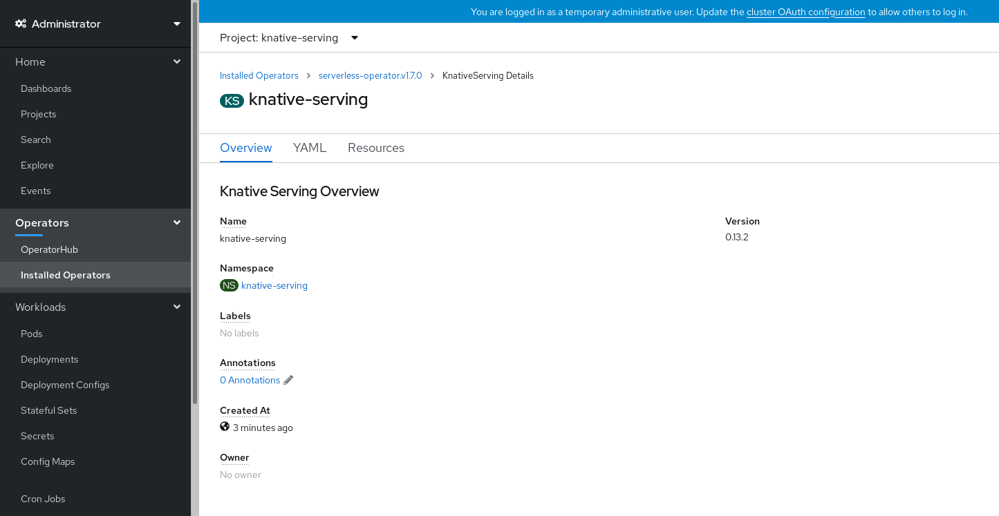
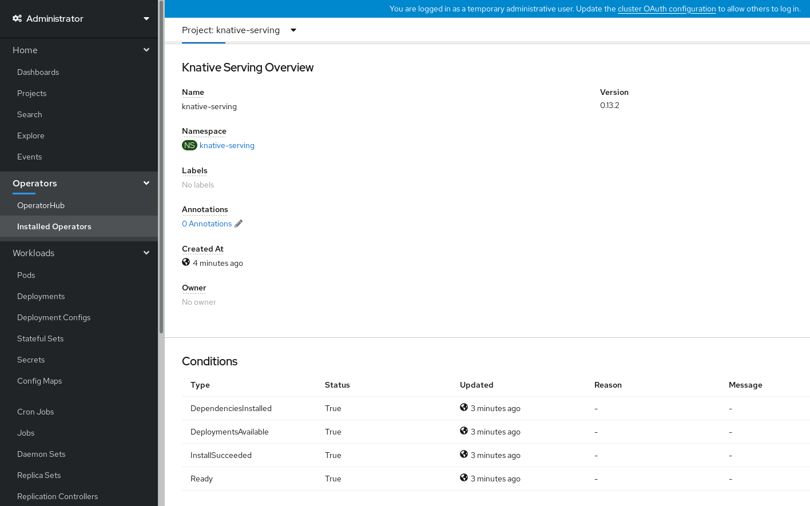
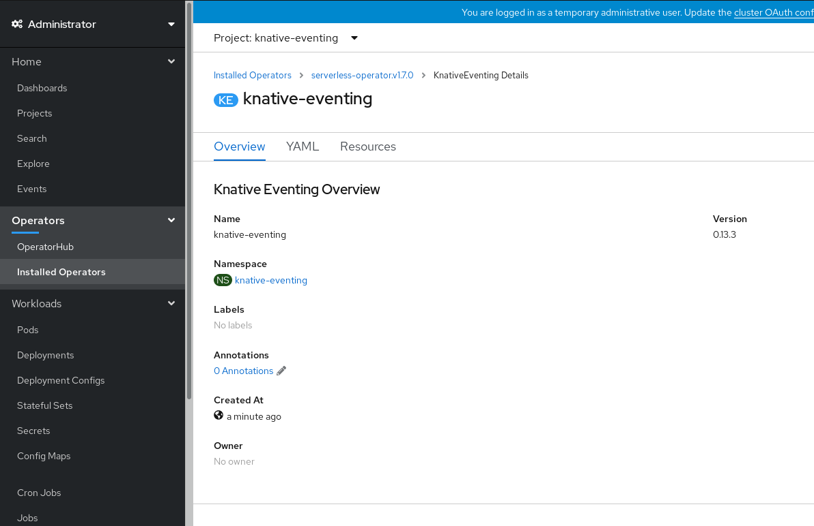
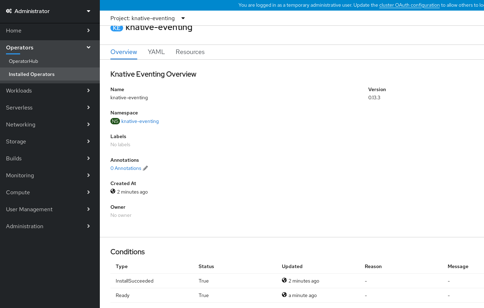
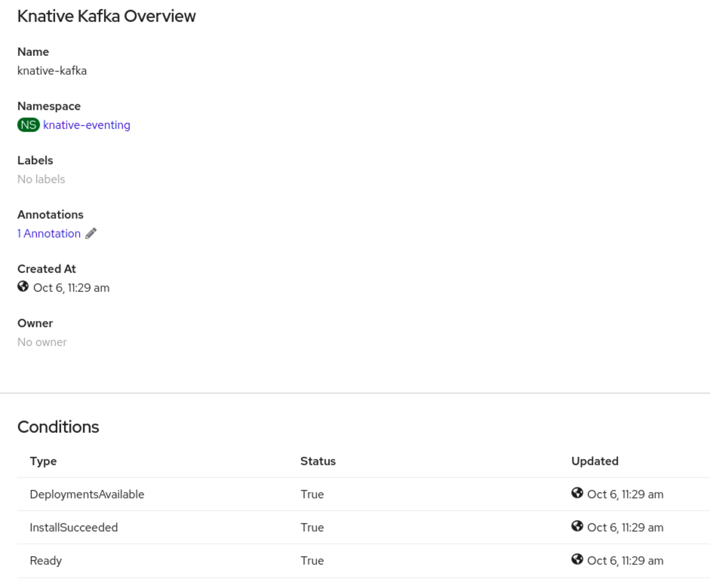

Preparing to install OpenShift Serverless
Read the following information about supported configurations and prerequisites before you install OpenShift Serverless.
For OpenShift Container Platform:
-
OpenShift Serverless is supported for installation in a restricted network environment.
-
OpenShift Serverless currently cannot be used in a multi-tenant configuration on a single cluster.
Supported configurations
The set of supported features, configurations, and integrations for OpenShift Serverless, current and past versions, are available at the Supported Configurations page.
Scalability and performance on OpenShift Container Platform
OpenShift Serverless has been tested with a configuration of 3 main nodes and 3 worker nodes, each of which has 64 CPUs, 457 GB of memory, and 394 GB of storage each.
The maximum number of Knative services that can be created using this configuration is 3,000. This corresponds to the OpenShift Container Platform Kubernetes services limit of 10,000, since 1 Knative service creates 3 Kubernetes services.
The average scale from zero response time was approximately 3.4 seconds, with a maximum response time of 8 seconds, and a 99.9th percentile of 4.5 seconds for a simple Quarkus application. These times might vary depending on the application and the runtime of the application.
|
Note
|
The following section on defining cluster size requirements applies to these distributions:
|
Defining cluster size requirements
To install and use OpenShift Serverless, the cluster must be sized correctly.
|
Note
|
The following requirements relate only to the pool of worker machines of the cluster. Control plane nodes are not used for general scheduling and are omitted from the requirements. |
The minimum requirement to use OpenShift Serverless is a cluster with 10 CPUs and 40GB memory. By default, each pod requests ~400m of CPU, so the minimum requirements are based on this value.
The total size requirements to run OpenShift Serverless are dependent on the components that are installed and the applications that are deployed, and might vary depending on your deployment.
Scaling your cluster using compute machine sets on OpenShift Container Platform
You can use the OpenShift Container Platform MachineSet API to manually scale your cluster up to the desired size. The minimum requirements usually mean that you must scale up one of the default compute machine sets by two additional machines. See Manually scaling a compute machine set.
Additional requirements for advanced use-cases
For more advanced use-cases such as logging or metering on OpenShift Container Platform, you must deploy more resources. Recommended requirements for such use-cases are 24 CPUs and 96GB of memory.
If you have high availability (HA) enabled on your cluster, this requires between 0.5 - 1.5 cores and between 200MB - 2GB of memory for each replica of the Knative Serving control plane. HA is enabled for some Knative Serving components by default. You can disable HA by following the documentation on "Configuring high availability replicas".
Additional resources in OpenShift Container Platform documentation
Installing the OpenShift Serverless Operator
Installing the OpenShift Serverless Operator enables you to install and use Knative Serving, Knative Eventing, and the Knative broker for Apache Kafka on a OpenShift Container Platform cluster. The OpenShift Serverless Operator manages Knative custom resource definitions (CRDs) for your cluster and enables you to configure them without directly modifying individual config maps for each component.
Installing the OpenShift Serverless Operator from the web console
You can install the OpenShift Serverless Operator from the OperatorHub by using the OpenShift Container Platform web console. Installing this Operator enables you to install and use Knative components.
-
You have cluster administrator permissions on OpenShift Container Platform, or you have cluster or dedicated administrator permissions on Red Hat OpenShift Service on AWS or OpenShift Dedicated.
-
For OpenShift Container Platform, your cluster has the Marketplace capability enabled or the Red Hat Operator catalog source configured manually.
-
You have logged in to the web console.
-
In the web console, navigate to the Operators → OperatorHub page.
-
Scroll, or type the keyword Serverless into the Filter by keyword box to find the OpenShift Serverless Operator.
-
Review the information about the Operator and click Install.
-
On the Install Operator page:
-
The Installation Mode is All namespaces on the cluster (default). This mode installs the Operator in the default
openshift-serverlessnamespace to watch and be made available to all namespaces in the cluster. -
The Installed Namespace is
openshift-serverless. -
Select an Update Channel.
-
The stable channel enables installation of the latest stable release of the OpenShift Serverless Operator. The stable channel is the default.
-
To install another version, specify the corresponding stable-x.y channel, for example stable-1.29.
-
-
Select the stable channel as the Update Channel. The stable channel will enable installation of the latest stable release of the OpenShift Serverless Operator.
-
Select Automatic or Manual approval strategy.
-
-
Click Install to make the Operator available to the selected namespaces on this OpenShift Container Platform cluster.
-
From the Catalog → Operator Management page, you can monitor the OpenShift Serverless Operator subscription’s installation and upgrade progress.
-
If you selected a Manual approval strategy, the subscription’s upgrade status will remain Upgrading until you review and approve its install plan. After approving on the Install Plan page, the subscription upgrade status moves to Up to date.
-
If you selected an Automatic approval strategy, the upgrade status should resolve to Up to date without intervention.
-
After the Subscription’s upgrade status is Up to date, select Catalog → Installed Operators to verify that the OpenShift Serverless Operator eventually shows up and its Status ultimately resolves to InstallSucceeded in the relevant namespace.
If it does not:
-
Switch to the Catalog → Operator Management page and inspect the Operator Subscriptions and Install Plans tabs for any failure or errors under Status.
-
Check the logs in any pods in the
openshift-serverlessproject on the Workloads → Pods page that are reporting issues to troubleshoot further.
|
Important
|
If you want to use Red Hat OpenShift distributed tracing with OpenShift Serverless, you must install and configure Red Hat OpenShift distributed tracing before you install Knative Serving or Knative Eventing. |
Installing the OpenShift Serverless Operator from the CLI
You can install the OpenShift Serverless Operator from the OperatorHub by using the CLI. Installing this Operator enables you to install and use Knative components.
-
You have cluster administrator permissions on OpenShift Container Platform, or you have cluster or dedicated administrator permissions on Red Hat OpenShift Service on AWS or OpenShift Dedicated.
-
For OpenShift Container Platform, your cluster has the Marketplace capability enabled or the Red Hat Operator catalog source configured manually.
-
You have logged in to the cluster.
-
Create a YAML file containing
Namespace,OperatorGroup, andSubscriptionobjects to subscribe a namespace to the OpenShift Serverless Operator. For example, create the fileserverless-subscription.yamlwith the following content:Example subscription--- apiVersion: v1 kind: Namespace metadata: name: openshift-serverless --- apiVersion: operators.coreos.com/v1 kind: OperatorGroup metadata: name: serverless-operators namespace: openshift-serverless spec: {} --- apiVersion: operators.coreos.com/v1alpha1 kind: Subscription metadata: name: serverless-operator namespace: openshift-serverless spec: channel: stable (1) name: serverless-operator (2) source: redhat-operators (3) sourceNamespace: openshift-marketplace (4)-
The channel name of the Operator. The
stablechannel enables installation of the most recent stable version of the OpenShift Serverless Operator. To install another version, specify the correspondingstable-x.ychannel, for examplestable-1.29. -
The name of the Operator to subscribe to. For the OpenShift Serverless Operator, this is always
serverless-operator. -
The name of the CatalogSource that provides the Operator. Use
redhat-operatorsfor the default OperatorHub catalog sources. -
The namespace of the CatalogSource. Use
openshift-marketplacefor the default OperatorHub catalog sources.
-
-
Create the
Subscriptionobject:$ oc apply -f serverless-subscription.yaml
Check that the cluster service version (CSV) has reached the Succeeded phase:
$ oc get csvNAME DISPLAY VERSION REPLACES PHASE
serverless-operator.v1.25.0 Red Hat OpenShift Serverless 1.25.0 serverless-operator.v1.24.0 Succeeded|
Important
|
If you want to use Red Hat OpenShift distributed tracing with OpenShift Serverless, you must install and configure Red Hat OpenShift distributed tracing before you install Knative Serving or Knative Eventing. |
Global configuration
The OpenShift Serverless Operator manages the global configuration of a Knative installation, including propagating values from the KnativeServing and KnativeEventing custom resources to system config maps. Any updates to config maps which are applied manually are overwritten by the Operator. However, modifying the Knative custom resources allows you to set values for these config maps.
Knative has multiple config maps that are named with the prefix config-. All Knative config maps are created in the same namespace as the custom resource that they apply to. For example, if the KnativeServing custom resource is created in the knative-serving namespace, all Knative Serving config maps are also created in this namespace.
The spec.config in the Knative custom resources have one <name> entry for each config map, named config-<name>, with a value which is be used for the config map data.
Additional resources for OpenShift Container Platform
Next steps
-
After the OpenShift Serverless Operator is installed, you can install Knative Serving or install Knative Eventing.
Installing the Knative CLI
The Knative (kn) CLI does not have its own login mechanism. To log in to the cluster, you must install the OpenShift CLI (oc) and use the oc login command. Installation options for the CLIs may vary depending on your operating system.
For more information on installing the OpenShift CLI (oc) for your operating system and logging in with oc, see the OpenShift CLI getting started documentation.
OpenShift Serverless cannot be installed using the Knative (kn) CLI. A cluster administrator must install the OpenShift Serverless Operator and set up the Knative components, as described in the Installing the OpenShift Serverless Operator documentation.
|
Important
|
If you try to use an older version of the Knative ( For example, if you use the 1.23.0 release of the Knative ( Ensure that you are using the latest Knative ( |
Installing the Knative CLI using the OpenShift Container Platform web console
Using the OpenShift Container Platform web console provides a streamlined and intuitive user interface to install the Knative (kn) CLI. After the OpenShift Serverless Operator is installed, you will see a link to download the Knative (kn) CLI for Linux (amd64, s390x, ppc64le), macOS, or Windows from the Command Line Tools page in the OpenShift Container Platform web console.
-
You have logged in to the OpenShift Container Platform web console.
-
The OpenShift Serverless Operator and Knative Serving are installed on your OpenShift Container Platform cluster.
ImportantIf libc is not available, you might see the following error when you run CLI commands:
$ kn: No such file or directory -
If you want to use the verification steps for this procedure, you must install the OpenShift (
oc) CLI.
-
Download the Knative (
kn) CLI from the Command Line Tools page. You can access the Command Line Tools page by clicking the icon in the top right corner of the web console and selecting Command Line Tools in the list.
icon in the top right corner of the web console and selecting Command Line Tools in the list. -
Unpack the archive:
$ tar -xf <file> -
Move the
knbinary to a directory on yourPATH. -
To check your
PATH, run:$ echo $PATH
-
Run the following commands to check that the correct Knative CLI resources and route have been created:
$ oc get ConsoleCLIDownloadExample outputNAME DISPLAY NAME AGE kn kn - OpenShift Serverless Command Line Interface (CLI) 2022-09-20T08:41:18Z oc-cli-downloads oc - OpenShift Command Line Interface (CLI) 2022-09-20T08:00:20Z$ oc get route -n openshift-serverlessExample outputNAME HOST/PORT PATH SERVICES PORT TERMINATION WILDCARD kn kn-openshift-serverless.apps.example.com knative-openshift-metrics-3 http-cli edge/Redirect None
Installing the Knative CLI for Linux by using an RPM package manager
For Red Hat Enterprise Linux (RHEL), you can install the Knative (kn) CLI as an RPM by using a package manager, such as yum or dnf. This allows the Knative CLI version to be automatically managed by the system. For example, using a command like dnf upgrade upgrades all packages, including kn, if a new version is available.
-
You have an active OpenShift Container Platform subscription on your Red Hat account.
-
Register with Red Hat Subscription Manager:
# subscription-manager register -
Pull the latest subscription data:
# subscription-manager refresh -
Attach the subscription to the registered system:
# subscription-manager attach --pool=<pool_id> (1)-
Pool ID for an active OpenShift Container Platform subscription
-
-
Enable the repositories required by the Knative (
kn) CLI:-
Linux (x86_64, amd64)
# subscription-manager repos --enable="openshift-serverless-1-for-rhel-8-x86_64-rpms" -
Linux on IBM zSystems and IBM® LinuxONE (s390x)
# subscription-manager repos --enable="openshift-serverless-1-for-rhel-8-s390x-rpms" -
Linux on IBM Power (ppc64le)
# subscription-manager repos --enable="openshift-serverless-1-for-rhel-8-ppc64le-rpms"
-
-
Install the Knative (
kn) CLI as an RPM by using a package manager:Exampleyumcommand# yum install openshift-serverless-clients
Locking version for the Knative CLI installed with RPM package manager
You might require to use Knative (kn) CLI version that is not the most recent, but is in Maintenance Phase. You can achieve that by locking the version of kn, which prevents it from being upgraded.
-
Install the
versionlockplugin for the DNF package manager:# dnf install 'dnf-command(versionlock)' -
Lock the version of
knby running:# dnf versionlock add --raw 'openshift-serverless-clients-1.7.*'This command locks
knto be the version based on Knative 1.7, which is in Maintenance Phase at the time of release of OpenShift Serverless 1.29.
Upgrading the Knative CLI with locked version
You can manually upgrade the Knative (kn) CLI version that has previously been version-locked.
-
Check whether upgraded packages are available:
# dnf search --showduplicates openshift-serverless-clients -
Remove the version lock of
kn:
# dnf versionlock delete openshift-serverless-clients
-
Lock
knto the new version:
# dnf versionlock add --raw 'openshift-serverless-clients-1.8.*'
+
This example uses the kn version that is based on Knative 1.8.
-
Upgrade to the new available version:
# dnf install --upgrade openshift-serverless-clients
Installing the Knative CLI for Linux
If you are using a Linux distribution that does not have RPM or another package manager installed, you can install the Knative (kn) CLI as a binary file. To do this, you must download and unpack a tar.gz archive and add the binary to a directory on your PATH.
-
If you are not using RHEL or Fedora, ensure that libc is installed in a directory on your library path.
ImportantIf libc is not available, you might see the following error when you run CLI commands:
$ kn: No such file or directory
-
Download the relevant Knative (
kn) CLItar.gzarchive:You can also download any version of
knby navigating to that version’s corresponding directory in the Serverless client download mirror. -
Unpack the archive:
$ tar -xf <filename> -
Move the
knbinary to a directory on yourPATH. -
To check your
PATH, run:$ echo $PATH
Installing the Knative CLI for macOS
If you are using macOS, you can install the Knative (kn) CLI as a binary file. To do this, you must download and unpack a tar.gz archive and add the binary to a directory on your PATH.
-
Download the Knative (
kn) CLItar.gzarchive.You can also download any version of
knby navigating to that version’s corresponding directory in the Serverless client download mirror. -
Unpack and extract the archive.
-
Move the
knbinary to a directory on yourPATH. -
To check your
PATH, open a terminal window and run:$ echo $PATH
Installing the Knative CLI for Windows
If you are using Windows, you can install the Knative (kn) CLI as a binary file. To do this, you must download and unpack a ZIP archive and add the binary to a directory on your PATH.
-
Download the Knative (
kn) CLI ZIP archive.You can also download any version of
knby navigating to that version’s corresponding directory in the Serverless client download mirror. -
Extract the archive with a ZIP program.
-
Move the
knbinary to a directory on yourPATH. -
To check your
PATH, open the command prompt and run the command:C:\> path
Installing Knative Serving
Installing Knative Serving allows you to create Knative services and functions on your cluster. It also allows you to use additional functionality such as autoscaling and networking options for your applications.
After you install the OpenShift Serverless Operator, you can install Knative Serving by using the default settings, or configure more advanced settings in the KnativeServing custom resource (CR). For more information about configuration options for the KnativeServing CR, see Global configuration.
|
Important
|
If you want to use Red Hat OpenShift distributed tracing with OpenShift Serverless, you must install and configure Red Hat OpenShift distributed tracing before you install Knative Serving. |
Installing Knative Serving by using the web console
After you install the OpenShift Serverless Operator, install Knative Serving by using the OpenShift Container Platform web console. You can install Knative Serving by using the default settings or configure more advanced settings in the KnativeServing custom resource (CR).
-
You have cluster administrator permissions on OpenShift Container Platform, or you have cluster or dedicated administrator permissions on Red Hat OpenShift Service on AWS or OpenShift Dedicated.
-
You have logged in to the OpenShift Container Platform web console.
-
You have installed the OpenShift Serverless Operator.
-
In the Administrator perspective of the OpenShift Container Platform web console, navigate to Operators → Installed Operators.
-
Check that the Project dropdown at the top of the page is set to Project: knative-serving.
-
Click Knative Serving in the list of Provided APIs for the OpenShift Serverless Operator to go to the Knative Serving tab.
-
Click Create Knative Serving.
-
In the Create Knative Serving page, you can install Knative Serving using the default settings by clicking Create.
You can also modify settings for the Knative Serving installation by editing the
KnativeServingobject using either the form provided, or by editing the YAML.-
Using the form is recommended for simpler configurations that do not require full control of
KnativeServingobject creation. -
Editing the YAML is recommended for more complex configurations that require full control of
KnativeServingobject creation. You can access the YAML by clicking the edit YAML link in the top right of the Create Knative Serving page.After you complete the form, or have finished modifying the YAML, click Create.
NoteFor more information about configuration options for the KnativeServing custom resource definition, see the documentation on Advanced installation configuration options.
-
-
After you have installed Knative Serving, the
KnativeServingobject is created, and you are automatically directed to the Knative Serving tab. You will see theknative-servingcustom resource in the list of resources.
-
Click on
knative-servingcustom resource in the Knative Serving tab. -
You will be automatically directed to the Knative Serving Overview page.
 -
Scroll down to look at the list of Conditions.
-
You should see a list of conditions with a status of True, as shown in the example image.
NoteIt may take a few seconds for the Knative Serving resources to be created. You can check their status in the Resources tab.
-
If the conditions have a status of Unknown or False, wait a few moments and then check again after you have confirmed that the resources have been created.
Installing Knative Serving by using YAML
After you install the OpenShift Serverless Operator, you can install Knative Serving by using the default settings, or configure more advanced settings in the KnativeServing custom resource (CR). You can use the following procedure to install Knative Serving by using YAML files and the oc CLI.
-
You have cluster administrator permissions on OpenShift Container Platform, or you have cluster or dedicated administrator permissions on Red Hat OpenShift Service on AWS or OpenShift Dedicated.
-
You have installed the OpenShift Serverless Operator.
-
Install the OpenShift CLI (
oc).
-
Create a file named
serving.yamland copy the following example YAML into it:apiVersion: operator.knative.dev/v1beta1 kind: KnativeServing metadata: name: knative-serving namespace: knative-serving -
Apply the
serving.yamlfile:$ oc apply -f serving.yaml
-
To verify the installation is complete, enter the following command:
$ oc get knativeserving.operator.knative.dev/knative-serving -n knative-serving --template='{{range .status.conditions}}{{printf "%s=%s\n" .type .status}}{{end}}'Example outputDependenciesInstalled=True DeploymentsAvailable=True InstallSucceeded=True Ready=TrueNoteIt may take a few seconds for the Knative Serving resources to be created.
If the conditions have a status of
UnknownorFalse, wait a few moments and then check again after you have confirmed that the resources have been created. -
Check that the Knative Serving resources have been created:
$ oc get pods -n knative-servingExample outputNAME READY STATUS RESTARTS AGE activator-67ddf8c9d7-p7rm5 2/2 Running 0 4m activator-67ddf8c9d7-q84fz 2/2 Running 0 4m autoscaler-5d87bc6dbf-6nqc6 2/2 Running 0 3m59s autoscaler-5d87bc6dbf-h64rl 2/2 Running 0 3m59s autoscaler-hpa-77f85f5cc4-lrts7 2/2 Running 0 3m57s autoscaler-hpa-77f85f5cc4-zx7hl 2/2 Running 0 3m56s controller-5cfc7cb8db-nlccl 2/2 Running 0 3m50s controller-5cfc7cb8db-rmv7r 2/2 Running 0 3m18s domain-mapping-86d84bb6b4-r746m 2/2 Running 0 3m58s domain-mapping-86d84bb6b4-v7nh8 2/2 Running 0 3m58s domainmapping-webhook-769d679d45-bkcnj 2/2 Running 0 3m58s domainmapping-webhook-769d679d45-fff68 2/2 Running 0 3m58s storage-version-migration-serving-serving-0.26.0--1-6qlkb 0/1 Completed 0 3m56s webhook-5fb774f8d8-6bqrt 2/2 Running 0 3m57s webhook-5fb774f8d8-b8lt5 2/2 Running 0 3m57s -
Check that the necessary networking components have been installed to the automatically created
knative-serving-ingressnamespace:$ oc get pods -n knative-serving-ingressExample outputNAME READY STATUS RESTARTS AGE net-kourier-controller-7d4b6c5d95-62mkf 1/1 Running 0 76s net-kourier-controller-7d4b6c5d95-qmgm2 1/1 Running 0 76s 3scale-kourier-gateway-6688b49568-987qz 1/1 Running 0 75s 3scale-kourier-gateway-6688b49568-b5tnp 1/1 Running 0 75s
Next steps
-
If you want to use Knative event-driven architecture you can install Knative Eventing.
Installing Knative Eventing
To use event-driven architecture on your cluster, install Knative Eventing. You can create Knative components such as event sources, brokers, and channels and then use them to send events to applications or external systems.
After you install the OpenShift Serverless Operator, you can install Knative Eventing by using the default settings, or configure more advanced settings in the KnativeEventing custom resource (CR). For more information about configuration options for the KnativeEventing CR, see Global configuration.
|
Important
|
If you want to use Red Hat OpenShift distributed tracing with OpenShift Serverless, you must install and configure Red Hat OpenShift distributed tracing before you install Knative Eventing. |
Installing Knative Eventing by using the web console
After you install the OpenShift Serverless Operator, install Knative Eventing by using the OpenShift Container Platform web console. You can install Knative Eventing by using the default settings or configure more advanced settings in the KnativeEventing custom resource (CR).
-
You have cluster administrator permissions on OpenShift Container Platform, or you have cluster or dedicated administrator permissions on Red Hat OpenShift Service on AWS or OpenShift Dedicated.
-
You have logged in to the OpenShift Container Platform web console.
-
You have installed the OpenShift Serverless Operator.
-
In the Administrator perspective of the OpenShift Container Platform web console, navigate to Operators → Installed Operators.
-
Check that the Project dropdown at the top of the page is set to Project: knative-eventing.
-
Click Knative Eventing in the list of Provided APIs for the OpenShift Serverless Operator to go to the Knative Eventing tab.
-
Click Create Knative Eventing.
-
In the Create Knative Eventing page, you can choose to configure the
KnativeEventingobject by using either the default form provided, or by editing the YAML.-
Using the form is recommended for simpler configurations that do not require full control of
KnativeEventingobject creation.Optional. If you are configuring the
KnativeEventingobject using the form, make any changes that you want to implement for your Knative Eventing deployment.
-
-
Click Create.
-
Editing the YAML is recommended for more complex configurations that require full control of
KnativeEventingobject creation. You can access the YAML by clicking the edit YAML link in the top right of the Create Knative Eventing page.Optional. If you are configuring the
KnativeEventingobject by editing the YAML, make any changes to the YAML that you want to implement for your Knative Eventing deployment.
-
-
Click Create.
-
After you have installed Knative Eventing, the
KnativeEventingobject is created, and you are automatically directed to the Knative Eventing tab. You will see theknative-eventingcustom resource in the list of resources.
-
Click on the
knative-eventingcustom resource in the Knative Eventing tab. -
You are automatically directed to the Knative Eventing Overview page.
 -
Scroll down to look at the list of Conditions.
-
You should see a list of conditions with a status of True, as shown in the example image.
NoteIt may take a few seconds for the Knative Eventing resources to be created. You can check their status in the Resources tab.
-
If the conditions have a status of Unknown or False, wait a few moments and then check again after you have confirmed that the resources have been created.
Installing Knative Eventing by using YAML
After you install the OpenShift Serverless Operator, you can install Knative Eventing by using the default settings, or configure more advanced settings in the KnativeEventing custom resource (CR). You can use the following procedure to install Knative Eventing by using YAML files and the oc CLI.
-
You have cluster administrator permissions on OpenShift Container Platform, or you have cluster or dedicated administrator permissions on Red Hat OpenShift Service on AWS or OpenShift Dedicated.
-
You have installed the OpenShift Serverless Operator.
-
Install the OpenShift CLI (
oc).
-
Create a file named
eventing.yaml. -
Copy the following sample YAML into
eventing.yaml:apiVersion: operator.knative.dev/v1beta1 kind: KnativeEventing metadata: name: knative-eventing namespace: knative-eventing -
Optional. Make any changes to the YAML that you want to implement for your Knative Eventing deployment.
-
Apply the
eventing.yamlfile by entering:$ oc apply -f eventing.yaml
-
Verify the installation is complete by entering the following command and observing the output:
$ oc get knativeeventing.operator.knative.dev/knative-eventing \ -n knative-eventing \ --template='{{range .status.conditions}}{{printf "%s=%s\n" .type .status}}{{end}}'Example outputInstallSucceeded=True Ready=TrueNoteIt may take a few seconds for the Knative Eventing resources to be created.
-
If the conditions have a status of
UnknownorFalse, wait a few moments and then check again after you have confirmed that the resources have been created. -
Check that the Knative Eventing resources have been created by entering:
$ oc get pods -n knative-eventingExample outputNAME READY STATUS RESTARTS AGE broker-controller-58765d9d49-g9zp6 1/1 Running 0 7m21s eventing-controller-65fdd66b54-jw7bh 1/1 Running 0 7m31s eventing-webhook-57fd74b5bd-kvhlz 1/1 Running 0 7m31s imc-controller-5b75d458fc-ptvm2 1/1 Running 0 7m19s imc-dispatcher-64f6d5fccb-kkc4c 1/1 Running 0 7m18s
Installing Knative broker for Apache Kafka
The Knative broker implementation for Apache Kafka provides integration options for you to use supported versions of the Apache Kafka message streaming platform with OpenShift Serverless. Knative broker for Apache Kafka functionality is available in an OpenShift Serverless installation if you have installed the KnativeKafka custom resource.
-
You have installed the OpenShift Serverless Operator and Knative Eventing on your cluster.
-
You have access to a Red Hat AMQ Streams cluster.
-
Install the OpenShift CLI (
oc) if you want to use the verification steps. -
You have cluster administrator permissions on OpenShift Container Platform, or you have cluster or dedicated administrator permissions on Red Hat OpenShift Service on AWS or OpenShift Dedicated.
-
You are logged in to the OpenShift Container Platform web console. .Procedure
-
In the Administrator perspective, navigate to Operators → Installed Operators.
-
Check that the Project dropdown at the top of the page is set to Project: knative-eventing.
-
In the list of Provided APIs for the OpenShift Serverless Operator, find the Knative Kafka box and click Create Instance.
-
Configure the KnativeKafka object in the Create Knative Kafka page.
ImportantTo use the Kafka channel, source, broker, or sink on your cluster, you must toggle the enabled switch for the options you want to use to true. These switches are set to false by default. Additionally, to use the Kafka channel, broker, or sink you must specify the bootstrap servers.
ExampleKnativeKafkacustom resourceapiVersion: operator.serverless.openshift.io/v1alpha1 kind: KnativeKafka metadata: name: knative-kafka namespace: knative-eventing spec: channel: enabled: true (1) bootstrapServers: <bootstrap_servers> (2) source: enabled: true (3) broker: enabled: true (4) defaultConfig: bootstrapServers: <bootstrap_servers> (5) numPartitions: <num_partitions> (6) replicationFactor: <replication_factor> (7) sink: enabled: true (8)-
Enables developers to use the
KafkaChannelchannel type in the cluster. -
A comma-separated list of bootstrap servers from your AMQ Streams cluster.
-
Enables developers to use the
KafkaSourceevent source type in the cluster. -
Enables developers to use the Knative broker implementation for Apache Kafka in the cluster.
-
A comma-separated list of bootstrap servers from your Red Hat AMQ Streams cluster.
-
Defines the number of partitions of the Kafka topics, backed by the
Brokerobjects. The default is10. -
Defines the replication factor of the Kafka topics, backed by the
Brokerobjects. The default is3. -
Enables developers to use a Kafka sink in the cluster.
NoteThe
replicationFactorvalue must be less than or equal to the number of nodes of your Red Hat AMQ Streams cluster.-
Using the form is recommended for simpler configurations that do not require full control of KnativeKafka object creation.
-
Editing the YAML is recommended for more complex configurations that require full control of KnativeKafka object creation. You can access the YAML by clicking the Edit YAML link in the top right of the Create Knative Kafka page.
-
-
Click Create after you have completed any of the optional configurations for Kafka. You are automatically directed to the Knative Kafka tab where knative-kafka is in the list of resources.
-
-
Click on the knative-kafka resource in the Knative Kafka tab. You are automatically directed to the Knative Kafka Overview page.
-
View the list of Conditions for the resource and confirm that they have a status of True.
If the conditions have a status of Unknown or False, wait a few moments to refresh the page.
-
Check that the Knative broker for Apache Kafka resources have been created:
$ oc get pods -n knative-eventingExample outputNAME READY STATUS RESTARTS AGE kafka-broker-dispatcher-7769fbbcbb-xgffn 2/2 Running 0 44s kafka-broker-receiver-5fb56f7656-fhq8d 2/2 Running 0 44s kafka-channel-dispatcher-84fd6cb7f9-k2tjv 2/2 Running 0 44s kafka-channel-receiver-9b7f795d5-c76xr 2/2 Running 0 44s kafka-controller-6f95659bf6-trd6r 2/2 Running 0 44s kafka-source-dispatcher-6bf98bdfff-8bcsn 2/2 Running 0 44s kafka-webhook-eventing-68dc95d54b-825xs 2/2 Running 0 44s
Next steps
-
If you want to use Knative services you can install Knative Serving.
Configuring Knative broker for Apache Kafka
The Knative broker implementation for Apache Kafka provides integration options for you to use supported versions of the Apache Kafka message streaming platform with OpenShift Serverless. Kafka provides options for event source, channel, broker, and event sink capabilities.
In addition to the Knative Eventing components that are provided as part of a core OpenShift Serverless installation, the KnativeKafka custom resource (CR) can be installed by:
-
Cluster administrators, for OpenShift Container Platform
-
Cluster or dedicated administrators, for Red Hat OpenShift Service on AWS or for OpenShift Dedicated.
The KnativeKafka CR provides users with additional options, such as:
-
Kafka source
-
Kafka channel
-
Kafka broker
-
Kafka sink
Configuring kube-rbac-proxy for Knative for Apache Kafka
The kube-rbac-proxy component provides internal authentication and authorization capabilities for Knative for Apache Kafka.
Configuring kube-rbac-proxy resources for Knative for Apache Kafka
You can globally override resource allocation for the kube-rbac-proxy container by using the OpenShift Serverless Operator CR.
You can also override resource allocation for a specific deployment.
The following configuration sets Knative Kafka kube-rbac-proxy minimum and maximum CPU and memory allocation:
apiVersion: operator.serverless.openshift.io/v1alpha1
kind: KnativeKafka
metadata:
name: knative-kafka
namespace: knative-kafka
spec:
config:
workload:
"kube-rbac-proxy-cpu-request": "10m" (1)
"kube-rbac-proxy-memory-request": "20Mi" (2)
"kube-rbac-proxy-cpu-limit": "100m" (3)
"kube-rbac-proxy-memory-limit": "100Mi" (4)-
Sets minimum CPU allocation.
-
Sets minimum RAM allocation.
-
Sets maximum CPU allocation.
-
Sets maximum RAM allocation.
Configuring OpenShift Serverless Functions
To improve the process of deployment of your application code, you can use OpenShift Serverless to deploy stateless, event-driven functions as a Knative service on OpenShift Container Platform. If you want to develop functions, you must complete the set up steps.
Prerequisites
To enable the use of OpenShift Serverless Functions on your cluster, you must complete the following steps:
-
The OpenShift Serverless Operator and Knative Serving are installed on your cluster.
NoteFunctions are deployed as a Knative service. If you want to use event-driven architecture with your functions, you must also install Knative Eventing.
-
You have the
ocCLI installed. -
You have the Knative (
kn) CLI installed. Installing the Knative CLI enables the use ofkn funccommands which you can use to create and manage functions. -
You have installed Docker Container Engine or Podman version 3.4.7 or higher.
-
You have access to an available image registry, such as the OpenShift Container Registry.
-
If you are using Quay.io as the image registry, you must ensure that either the repository is not private, or that you have followed the OpenShift Container Platform documentation on Allowing pods to reference images from other secured registries.
-
If you are using the OpenShift Container Registry, a cluster administrator must expose the registry.
Setting up Podman
To use advanced container management features, you might want to use Podman with OpenShift Serverless Functions. To do so, you need to start the Podman service and configure the Knative (kn) CLI to connect to it.
-
Start the Podman service that serves the Docker API on a UNIX socket at
${XDG_RUNTIME_DIR}/podman/podman.sock:$ systemctl start --user podman.socketNoteOn most systems, this socket is located at
/run/user/$(id -u)/podman/podman.sock. -
Establish the environment variable that is used to build a function:
$ export DOCKER_HOST="unix://${XDG_RUNTIME_DIR}/podman/podman.sock" -
Run the build command inside your function project directory with the
-vflag to see verbose output. You should see a connection to your local UNIX socket:$ kn func build -v
Setting up Podman on macOS
To use advanced container management features, you might want to use Podman with OpenShift Serverless Functions. To do so on macOS, you need to start the Podman machine and configure the Knative (kn) CLI to connect to it.
-
Create the Podman machine:
$ podman machine init --memory=8192 --cpus=2 --disk-size=20 -
Start the Podman machine, which serves the Docker API on a UNIX socket:
$ podman machine start Starting machine "podman-machine-default" Waiting for VM ... Mounting volume... /Users/myuser:/Users/user [...truncated output...] You can still connect Docker API clients by setting DOCKER_HOST using the following command in your terminal session: export DOCKER_HOST='unix:///Users/myuser/.local/share/containers/podman/machine/podman-machine-default/podman.sock' Machine "podman-machine-default" started successfullyNoteOn most macOS systems, this socket is located at
/Users/myuser/.local/share/containers/podman/machine/podman-machine-default/podman.sock. -
Establish the environment variable that is used to build a function:
$ export DOCKER_HOST='unix:///Users/myuser/.local/share/containers/podman/machine/podman-machine-default/podman.sock' -
Run the build command inside your function project directory with the
-vflag to see verbose output. You should see a connection to your local UNIX socket:$ kn func build -v
Next steps
-
For more information about Docker Container Engine or Podman, see Container build tool options.
Serverless upgrades
OpenShift Serverless should be upgraded without skipping release versions. This section shows how to resolve problems with upgrading.
Resolving an OpenShift Serverless Operator upgrade failure
You might encounter an error when upgrading OpenShift Serverless Operator, for example, when performing manual uninstalls and reinstalls. If you encounter an error, you must manually reinstall OpenShift Serverless Operator.
-
Identify the version of OpenShift Serverless Operator that was installed originally by searching in the OpenShift Serverless Release Notes.
For example, the error message during attempted upgrade might contain the following string:
The installed KnativeServing version is v1.5.0.In this example, the KnativeServing
MAJOR.MINORversion is1.5, which is covered in the release notes for OpenShift Serverless 1.26: OpenShift Serverless now uses Knative Serving 1.5. -
Uninstall OpenShift Serverless Operator and all of its install plans.
-
Manually install the version of OpenShift Serverless Operator that you discovered in the first step. To install, first create a
serverless-subscription.yamlfile as shown in the following example:apiVersion: operators.coreos.com/v1alpha1 kind: Subscription metadata: name: serverless-operator namespace: openshift-serverless spec: channel: stable name: serverless-operator source: redhat-operators sourceNamespace: openshift-marketplace installPlanApproval: Manual startingCSV: serverless-operator.v1.26.0 -
Then, install the subscription by running the following command:
$ oc apply -f serverless-subscription.yaml -
Upgrade by manually approving the upgrade install plans as they appear.